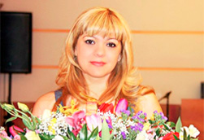
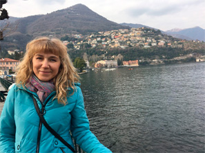
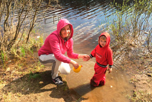
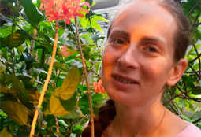

Результаты участников после прохождения
-

Наталья Ткаль
Закончился марафон "КАРМИЧЕСКИЕ ЗАДАЧИ по дате рождения ". Четыре дня пролетели на "одном дыхании". Я выражаю огромную благодарность Анатолию Васильевичу и всей вашей команде за ваш труд и любовь к людям. За ваши знания и огромное желание помогать людям. Этот марафон разбудил во мне желание обучаться дальше этой науке. Я этому очень рада! Еще раз благодарю вас!
-

Юлия Рубцова
Очень интересные и своевременные знания,все кругом так запутано,после вебинаров приходит понимание почему в жизни происходят некоторые события и ситуации,как можно на это повлиять,восхищает простота подачи серьезной информации. БлагоДарю!!!!!
-
Надя Кесельман
Огромное спасибо, большая благодарность Анатолию Шмульскому за очень качественный и информативный вебинар. Большое спасибо за конкретные, применимые знания, которые я уже сегодня смогу использовать с пользой для себя и близких. Отдельно хочу сказать спасибо ЗА ГЛУБИНУ ВЗГЛЯДА НА ЖИЗНЬ, ОСНОВАТЕЛЬНОСТЬ преподавателя - это очень важно. Благодарю вас за знания!
-

Анечка Хан
Огромное спасибо за такие глубокие вебинары🙏 Очень много ценной информации, начинаешь многое понимать в жизни. Завтра буду создавать свой персональный календарь благоприятных дат и периодов. Спасибо, спасибо, спасибо❤❤❤❤
-

Яна Иванова
Выражаю огромную благодарность Анатолию Васильевичу и всей команде Академии времени за марафоны "Кармические задачи по дате рождения" и "Предназначение по дате рождения". Прошла их на одном дыхании! Слушала очень внимательно, делала записи. Марафоны открыли мне глаза. На многие свои вечные вопросы я нашла ответы, но появилось много новых, более глубоких. Сейчас есть стойкое ощущение, что я на пути грандиозных открытий. Мечтаю пройти полное обучение в Академии времени и стать настоящим ведическим консультантом. Уверена, что Вселенная мне поможет.
-
Татьяна Бирюля
Благодарю Анатолия Васильевича за замечательный марафон, изумительные знания, которые даны четко, просто, доступно - и невероятно - как все выстраивается в четкое видение ситуаций, людей, себя в этом! А это - только начало!!! И как Вы это даете - очень интересно, терпеливо, вкладывая ВСЮ ДУШУ !!! БЛАГОДАРЮ !!!
-
Ирина Синайская
Не устаю слушать повторяющие уроки Анатолия Васильевича Шмульского! Начала свою учебу в Академии Времени в конце 2015 года. Все, что на марафоне рассказывает Анатолий Васильевич, я уже прошла. Но когда слушаешь повторение, то информация глубже проникает в наше сознание. Некоторые моменты заново осознаешь и больше начинаешь разбираться в данной теме. Еще интересней использование знаний в школе-жизни. Именно тогда смотришь на всё происходящее по другому. Сейчас могу сказать одно, что спустя какое -то время, по истине начала разбираться в знаниях полученных в Академии Времени. Марафоны так же дают обогащение пройденного. Огромная, огромная БлагоДарность за ваш труд, любовь и терпение!! ВСЕМ, ВСЕМ, ВСЕМ, кто помогает нам осознать себя и других людей!!! Анатолий Васильевич-низкий Вам поклон!!! Всем, кто занимается таким уникальным проектом, БЛАГ, ЛЮБВИ, СЧАСТЬЯ!!!!
-

Наталия Голубова
Здорово! Хоть вы и говорили, что от того, что узнаешь своё предназнаение легче не станет, а мне стало таки лучше.😃 Характеристики совпали. И то, что гороскоп не властен если ты развиваешся в Благости так же совпало с моими ощущениями...Благодарю за позитив во время подачи материала👍🌈!!! Рада была ощущению, что среди этих знаний есть место Творцу. В этих знаниях есть Душа! Всё Взаимосвязано🌍✨🌞!!!🌝
-
Мария Ярушина
Анатолий и команда, благодарю ВАС за интересные и нужные знания. За то, что приоткрыли дверь в огромный, новый, не понятный, но очень интересный мир. Чем больше слушаю, тем больше хочется узнать. Даже не знаю с чего начать. С курса "Хобби" или сначала прочитать и посмотреть рекомендованные видеоуроки, чтобы лучше понимать суть материй с которыми я соприкоснулась. Это космос, как же мы малы и примитивны. Но как, такие далекие и холодные звёзды могут так сильно влиять на нас... Космос. СПАСИБО! 💕🙏🌞🌙🌎🚀❤
-
Людмила Пряхина
Огромная благодарность Вам Анатолий Васильевич и всей команде Академии времени, за прекрасный марафон, за те важные,нужные, вдохновляющие и понятные знания которыми вы делитесь и пытаетесь донести до каждого участника, до каждого человека, я очень рада что случайно попала на ваш марафон, хотя нам известно(((, что случайностей не бывает, я много читала изучала,но такой доходчивой информации не где не встречала, иду к Вам учиться и надеюсь нашла своих учителей в Вашем лице и всей команды Академия Времени)))!!!!